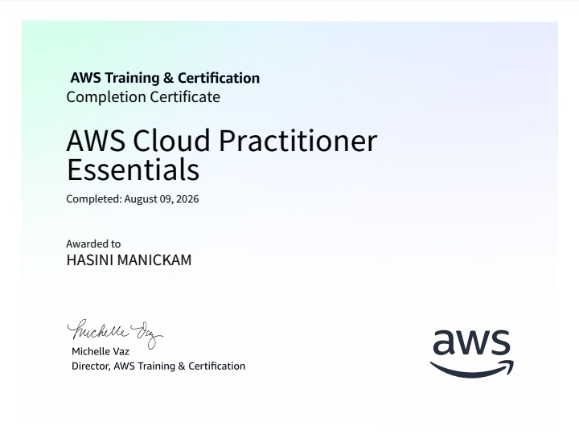
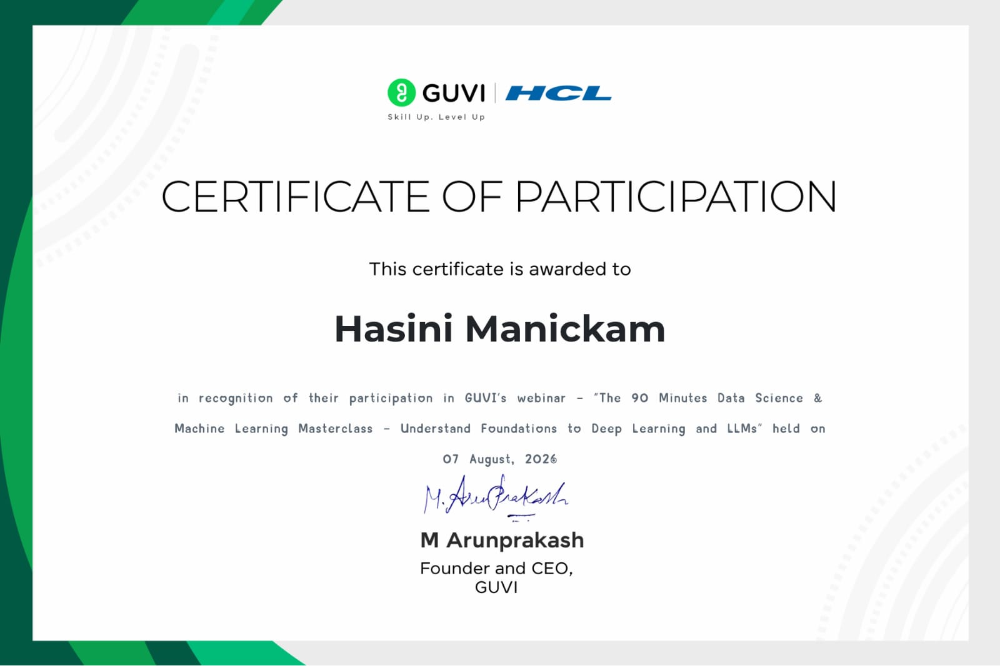
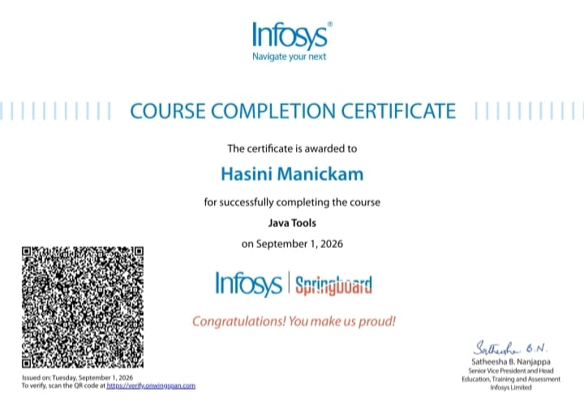
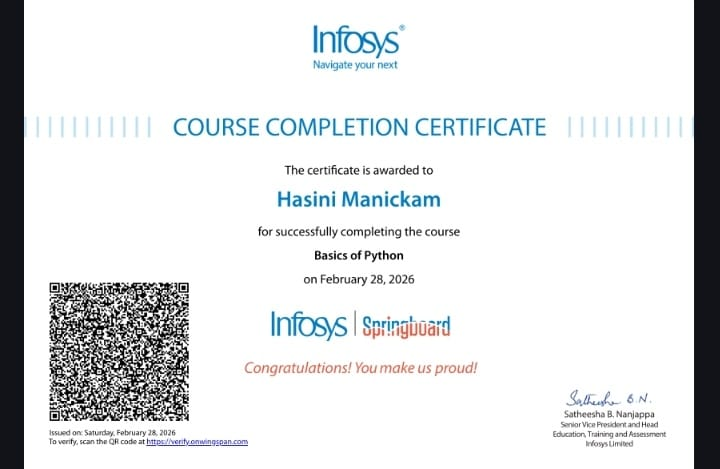

Learn by Building
Developing practical projects while strengthening my fundamentals.
AI & DATA SCIENCE STUDENT
Hello, I'm
I explore Artificial Intelligence, Machine Learning, and Data Science to build practical projects and turn data into meaningful insights.
Certifications and courses I've completed

Amazon Web Services (AWS)

GUVI

Infosys Springboard

Infosys Springboard
Udemy
01 / ABOUT ME
Hi, I'm Hasini — an AI & Data Science student passionate about exploring intelligent technologies.
I'm building my foundation in Python, Machine Learning, and Data Science through hands-on projects. I enjoy learning new tools, working with data, and turning ideas into practical applications.
My goal is to grow into a Machine Learning Engineer and contribute to projects that solve real-world problems using AI.
Explore My WorkDeveloping practical projects while strengthening my fundamentals.
Exploring machine learning, data analysis and AI-powered tools.
Improving my technical knowledge one project at a time.
02 / MY TOOLKIT
Technologies and concepts I'm learning and applying through projects in AI, data science, and software development.
Building programming fundamentals and problem-solving skills.
Working with data, organizing information, and identifying patterns.
Exploring predictive models and practical machine learning concepts.
Learning how AI techniques can solve real-world problems.
Presenting information in a clear and understandable format.
Using development tools to build, manage, and share projects.
03 / SELECTED WORK
Practical projects where I explore AI, Machine Learning, Data Science and real-world problem solving.
PROJECT 01
A machine learning project using housing data to predict house prices and explore model performance.
Understand how property-related features can be used to estimate house prices.
Explore the dataset, prepare features and apply a machine learning model.
Data preparation, model training and prediction workflows.
PROJECT 02
A Streamlit dashboard for retail sales analytics, inventory alerts and AI-assisted business questions.
Retail data can be difficult to review for sales patterns and inventory needs.
Designed around sales analysis, inventory insights and AI-assisted business questions.
Python, Streamlit, Pandas and Gemini AI.
PROJECT 03
An educational project exploring heart-rate data analysis and unusual patterns using machine learning. It is not a medical diagnostic tool.
Explore heart-rate data and identify patterns for educational analysis.
Use data handling and visualization techniques to examine the readings.
This is an educational project, not a medical diagnostic tool.
PROJECT 04
A Flask web application featuring SOS support, emergency contacts, location features and access to emergency services.
Make emergency support features easier to access through a web application.
Build around SOS support, emergency contacts and emergency-service access.
Python, Flask, SQLite and JavaScript.
MY PROGRESS
A journey of learning, building projects and growing my technical skills.
FOUNDATION
Building my understanding of Python, Java and problem-solving.
LEARNING
Exploring data analysis, machine learning and related tools.
HANDS-ON PRACTICE
Applying what I learn through practical project development.
NEXT GOAL
Strengthening my skills and seeking relevant learning opportunities.
EXPLORE MY SKILLS
Select a skill to explore how it connects to my learning and projects.
PROGRAMMING
Used for programming, data handling and machine learning practice.
Related learning: House Price Prediction and data-focused projects.
A LITTLE INTERACTIVE CORNER
Type a command to learn more about my portfolio.
Welcome! Type help to see available commands.
Try: help · about · skills · projects · contact
QUICK INTRODUCTION
Choose a question to learn more about my work and interests.
Answers about my portfolio
CURRENT FOCUS
LEARNING
Developing technical knowledge through study and practice.
BUILDING
Improving my project work and documenting what I learn.
NEXT STEP
Working towards my goal of becoming a Machine Learning Engineer.
These cards describe my current focus; they are not an automated live activity feed.